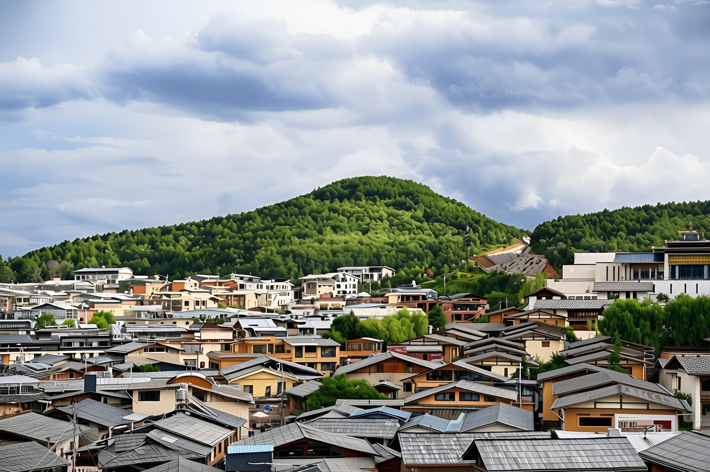
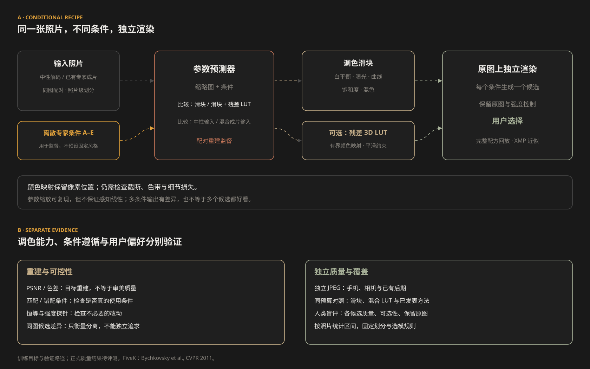

03MOTIVATION
两个问题：太贵，而且把风格做没了


两种风格的像素混合：一张图的观察
同一张照片可以有不同的有效做法。这里比较两个分支与它们的像素平均， 检查混合是否保留原有风格。像素插值、参数插值和标量选优是不同操作，不能互相等同。


一张照片可以有几种成立的修法。早期原型让模型提出方向，独立编辑后比较终选； 当前研究转向本地参数化候选，先做好 JPEG，再把选择留给用户。

PhotoAgent 把修图当成多步决策。本项目关注两个实用问题：执行成本—— 执行式搜索需要实际生成候选，论文附录 F 默认配置报告约 470 秒一张； 偏好覆盖——希望在每个候选质量合格时，为不同用户保留愿意选择的结果。 标量目标本身可以有多个峰；这里关心的是候选是否覆盖了多种有效做法。
每个候选方向只让视觉模型看一眼原图，给出预测分，不再"跑一遍看看"。本实现规划期生成 0 张、规划耗时 16.5 秒（论文报告其默认配置为约 60 次生成、规划约 250 秒）。
候选单位从"提亮/加饱和"这类动作，换成"胶片暖调""冷调极简"这类完整方向。K 条链路各做各的（本次运行 K = 2），分数和参数都不互相混合。
终选可以判定"原图最好"；另有内容保持门禁，改动破坏画面时整条分支作废。
| 维度 | PhotoAgent | PhotoPeaks |
|---|---|---|
| 搜索单元 | 原子动作组成的多步序列 | 完整风格概念，分支隔离 |
| 候选评估 | 模拟执行并评价候选 | VLM 预测打分 |
| 规划成本 | 约 250s · 论文默认配置 | 16.5s · 规划期 0 次生成 |
| 目标形式 | 多指标加权标量 | 四维预测效用加权排序 + 比较式终选 |
| 接受策略 | 单调不降，否则回滚 | 分支保留 + 允许原图 |
| 安全机制 | 多指标评价 + 不提升则回退 | 内容保持门禁 + 比较终选 |
表内左侧为其论文报告的设计与数字（成本见附录 F），右侧为本实现实测。两者不是同一套代码，本表是设计对照，不是对照实验。
架构里不写死任何数量：每轮从当前状态提出 n 个互斥风格方向，预测式打分后按效用取 Top-K； K 条链路并行执行（硬隔离，彼此不交换任何信息），过内容门禁后由评估器在「当前状态 + K 个结果」里比较式评优。 当前状态胜出就退出——第 1 轮退出即"原图最好，不改"；否则胜者成为下一轮的起点，直到 R 轮上限。
模块之间传的是结构化字段，不是自由文本；成本是实测的。数量一律用记号（n / K / s），具体取值只出现在"本次运行配置"里。
| 消息 | 内容 | 成本（实测） |
|---|---|---|
| Perceiver → Judge | {name, rationale, style_keywords[], steps[≤ s]} | 每轮 1 次 VLM 调用，产出 n 个互斥方向 |
| Judge → Selector | {aesthetic_gain, style_coherence, feasibility, fidelity_risk} | 每个方向 1 次调用；规划期 0 次生成 |
| Selector → Executor | 概念步骤链：有序的文本编辑指令（无掩码、无数值滑杆） | 本地排序，零成本 |
| Executor → Gate | 编辑后的图像（1280px 长边，JPEG） | 每次编辑约 18.8 秒 |
| Gate → Evaluator | {content_sim, structure, chroma_ratio, passed} | 本地 CLIP + 结构校验，零成本 |
| Evaluator → 出口 | {best: 0..K, reason} 0 = 当前状态（第 1 轮即原图） | 1 次比较式调用 |
同一张照片可以有不同的有效做法。这里比较两个分支与它们的像素平均， 检查混合是否保留原有风格。像素插值、参数插值和标量选优是不同操作，不能互相等同。
让模型提出 n 个互不相同的风格方向（n 是可调参数，示例 n = 5；比如胶片暖调、冷调极简、戏剧化）。 像"提亮一点"和"再亮一点"这类同义方向会被要求重写；拍人的照片不许改动脸。
每个方向只让模型看一眼当前图像，给出预测分：值不值得做、会不会伤画面。 这一步不生成任何图片，也是成本能降下来的原因。
只做效用最高的 K 个方向（K ≤ n，示例 K = 2），各自在自己的链路里执行、同时进行，互不交流—— 各方向独立执行，比较输出后选择。这样保留多个候选，不对混合结果作数学保证。
把当前状态和 K 个成品放在一起比较，允许直接判"当前状态最好"：第 1 轮就是"原图最好"，直接退出； 否则胜者成为下一轮的起点，最多走 R 轮。另有内容保持检查——改动破坏了画面，整条链路作废。

照片是我自己拍的 27 张（人像、风光、城市、夜景、食物混着来）。三种做法跑同样的 API：
single 只发一句"把这张图修好"；scalar 拆成动作逐个打分选一个（内部单动作基线）；
peaks 是本文的完整流程。

| 策略 | 耗时/张 | VLM 调用 | 编辑调用 | 内容保持↑ | BRISQUE↓ | 美学盲评↑ |
|---|

完整流程（约束 + 细节融合）的输出。每张都可以左右拖动：左边是原图，右边是成品。


所有分支都被门禁否决，或者终选认为原图更好时，系统就交回原图。 PhotoAgent 也有分数未改善时回退的机制；本实现额外加入内容门禁，并在比较时显式保留原图选项。
生成式编辑的特点是：你不约束它，它就会自由发挥。有四件事必须提前挡住。
指令里出现"氛围""层次"，它就可能真的去画前景、加光晕。 做法：每条指令带保持性要求，概念层面禁止"添加类"步骤，门禁用边缘结构相关性复核。
"暖光""日落感"这类词很容易把整张图推向橙红，风景还好，脸就明显不对。 做法：概念阶段锁定肤色与身份，融合时只从原片取纹理、不碰颜色。
编辑接口固定返回约 130 万像素，而原片是 2400 万像素，一步接一步重画还会继续掉细节。 做法：影调和颜色取编辑结果，纹理从原片高频补回。
全局相似度看的是"还是不是那张图"，局部多画几片叶子、脸偏一点色，它几乎不扣分。 做法：三个本地指标交叉检查（内容相似度、结构相关性、高频色度噪声），越界即整条分支作废。
前面那些约束都是绕路。为了弄清根因，我用同一张照片做了单步对照实验：只改指令措辞，其余不变，看输出的整体色彩偏移。
| 指令 | Δ(R−B) 暖冷偏移 | Δ 饱和 | Δ 亮度 |
|---|---|---|---|
| "稍微锐化"（不含颜色词） | ≈ 0 | ≈ 0 | ≈ 0 |
| "提高中间调对比"（纯影调） | +3 ~ +12 | +3 ~ +9 | −34 / +9 |
| "整体调冷" | −57 / −44 | +29 / +35 | ±10 内 |
| "整体调暖" | +50 / +83 | +46 / +49 | ±10 内 |
| "稍微锐化"连做两步 | +0.7 / +4.3 | ≈ 0 | ≈ 0 |
两组数字分别对应两张测试照片（猫、城景）。中性指令下模型几乎是忠实的； 一旦出现"暖/冷/色温"，它就会把整幅图推走 50–80 个单位的暖冷偏移，把饱和度抬高三四十， 在这些样例上，"稍微"没有把修改幅度可靠地限定到预期范围。
结论很直接：通用编辑模型做不到"理解意图并按合适的幅度修改"——它只会做"大动作"。 我们能在规划层禁掉色温类步骤、能用门禁兜底，但这是在躲问题。 要让系统稳定，重新训练执行器是必须的，不是优化项。
第一版给同一张 JPEG 提供多个好看的候选，让用户选择。先验证每个候选的质量、差异与可控性，再扩展到 RAW 和局部编辑。
让模型根据图像与条件预测白平衡、曝光、曲线、混色和饱和度，并比较小型残差 LUT 是否补足颜色映射能力。 每个候选从同一张原图独立渲染，保留原图选项。参数化可以记录完整配方、约束改动幅度， 但仍需检查截断、色带与细节损失；它本身不保证好看。
先用 MIT-Adobe FiveK 的同图五专家配对学习，比较中性输入与已有专家成片作为输入的表现。 专家条件用于对应目标，并不等于五个固定的风格标签。 可逆扰动作为后续补充，它能检验恢复能力，却不能保证网络会使用风格条件。

| 规则 | 要回答的问题 |
|---|---|
| 质量与差异分别评价 | 候选是否各自成立，而非靠夸张调色凑出差异？ |
| 匹配与错配条件对照 | 匹配条件是否比打乱条件更接近目标？仅有变化还不够。 |
| 原图与恒等样本 | 已经调好的照片，是否被无必要地改坏？ |
| 强度从零开始 | 参数缩放能否提供平滑、可用的感知控制？ |
当前计划构建 800 张训练、200 张测试的小集，从训练照片中再划出验证集。 同一照片的五位专家成片始终一起划分。PSNR 与色差衡量目标重建，同图候选间差异衡量分离程度； 它们都不能替代人类偏好。最终采用不参与训练和选模的人类盲评，比较同预算候选集的质量、可选性与保留原图的比例。
模型在缩略图上预测，全分辨率用于渲染。本地候选生成不依赖付费编辑 API，完整配方可以回放； XMP 仅近似保留滑块部分。延迟和质量在正式评测后报告，当前不把训练目标写成已完成结果。
同一张照片可以有几种用户喜欢的修法，偏好也会随场景与用途改变。 第一版由用户直接挑选候选，后续反馈用于改善排序与覆盖。 配对数据先验证调色能力，偏好数据再验证哪些候选值得呈现。
先用离散条件生成候选，不要求用户写提示词。CLIP 图像差分到文本的迁移保留为实验分支： 两者并不自动对齐，同图目标差分也不同于任意参考照片。 连续风格空间需要另行检验内容泄漏、条件遵循与跨照片一致性。
参数可复现不等于风格正确；排序、门禁与提示接口都需要重新校准。
JPEG 已带有相机或手机的颜色处理，也可能经过后期。第一版控制改动幅度， 单独检验这些常见输入。FiveK 的 RAW 中性解码不能直接代表日常 JPEG， 专家成片输入也只是适应性对照，仍需独立照片验证。
RAW 可提供不同的曝光、白平衡和颜色处理余量，是后续扩展方向。 可恢复的信息取决于原始采集与解码，不能保证已截断的高光恢复。 适配时需要重新定义输入、颜色空间与训练目标。
当前参数化管线使用全局颜色映射，同样的颜色会受到相同处理，因而独立控制天空与肤色仍有限制。 后续可用语义蒙版让不同区域独立调色，同时检查边界与区域间的颜色一致性。
局部能力以相同数据与预算比较增益；它可能改善控制，也会带来新的误差来源。
当前结果支持改进动作幅度、减少无效执行，并把候选覆盖作为独立目标。 它们不足以证明审美目标的数学形状，也不能证明某一类搜索必然失败。观察与解释需要分开。
| 观察 | 可以支持什么 | 尚不能推出什么 |
|---|---|---|
| 动作幅度未稳定遵循提示 | 需要校准文本与执行幅度 | 所有原子动作都不存在可用小步 |
| 颜色、曝光与对比共同影响观感 | 成组编辑值得对照 | 审美目标必然具有特定的非凸几何 |
| 模型评分存在噪声 | 需要独立评价与不确定性报告 | 小样本均值差已经确立审美优势 |
| 内容相似度不够敏感 | 需要额外的保真检查 | 高 CLIP 或边缘相关性保证零损伤 |
前面的单图像素平均实验只说明一次混合没有超过两个端点。平均图得分与较低端点相同， 不能称为“两峰之间的谷底”，也不能推出参数插值普遍不可行。 加权标量目标可以有多个极值，最大化一个分数并不等于把不同风格的像素平均。
PhotoAgent 用 MCTS 探索多步动作序列，并带有回退机制。 本文的 scalar 对照只选择一次预测增益最高的原子动作，不能代表它。 若研究搜索策略，需要相同执行器、评价器、动作与调用预算下的直接对照。
下一阶段以 PhotoAgent 为核心对照：同样数量的候选交由用户盲选，同时检验细节保持、改动过度与总耗时。 对完整系统和共享执行器的策略分别比较，并纳入较小搜索预算。 当前尚无可核验的 PhotoAgent 直接实测，不能将本页结果表述为对它的性能胜出。
参数预测已有 HDRNet、 SepLUT 等工作。 我们要验证的是：在每个候选质量合格的前提下，同图多条件是否提供更多有用选择， 本地参数化执行是否改善控制与成本。目前不把“预测参数”本身当作新贡献，也不把效率改善当作审美优势。
前作中的风格混合经验提供研究动机，不能替代这里的对照。 专家间差异、多候选分离与用户偏好是三件不同的事，需要分别验证。
让候选各自成立，再验证用户是否拥有更好的选择。
photopeaks/
├── perceiver.py 概念生成（Qwen-VL，一次调用出 n 个概念，本次 n = 5）
├── judge.py 预测式评判 + 比较式终选
├── executor.py 编辑执行器（DashScope / OpenAI 兼容端点）
├── gates.py 本地 CLIP 门禁与质量度量
├── agent.py 主闭环（分支并行、计时与调用计数）
└── scripts/
├── run_benchmark.py 三策略对照（single / scalar / peaks）
├── make_figdata.py 图表数据（CLIP 嵌入、多样性、逐张指标）
├── make_figures.py 本文所有数据图表
└── make_method_figure.py Figure 1 架构大图（SVG）
图表都由 scripts/make_*.py 生成。
| 感知 / 评判模型 | Qwen-VL（DashScope 兼容端点） |
| 编辑模型 | qwen-image-edit，每次约 18–20 秒，输入 1280px 长边 |
| 门禁模型 | CLIP ViT-B/32，本地 CPU |
| 盲评做法 | 同一个 VLM 打分，不告诉它图是哪套流程出的 |
| 照片 | 27 张本人实拍，三套流程各跑一遍，共 81 次 |
| 主要超参 | n = 5 个候选方向 · K = 2 条并行链路 · R = 1 轮 · 概念内步骤链逐步执行（平均 5.8 次编辑 / 张） |
python -m scripts.run_benchmark --photos data/photos --out results/run1 python -m scripts.make_figdata && python -m scripts.make_figures python demo.py # 本地交互 demo